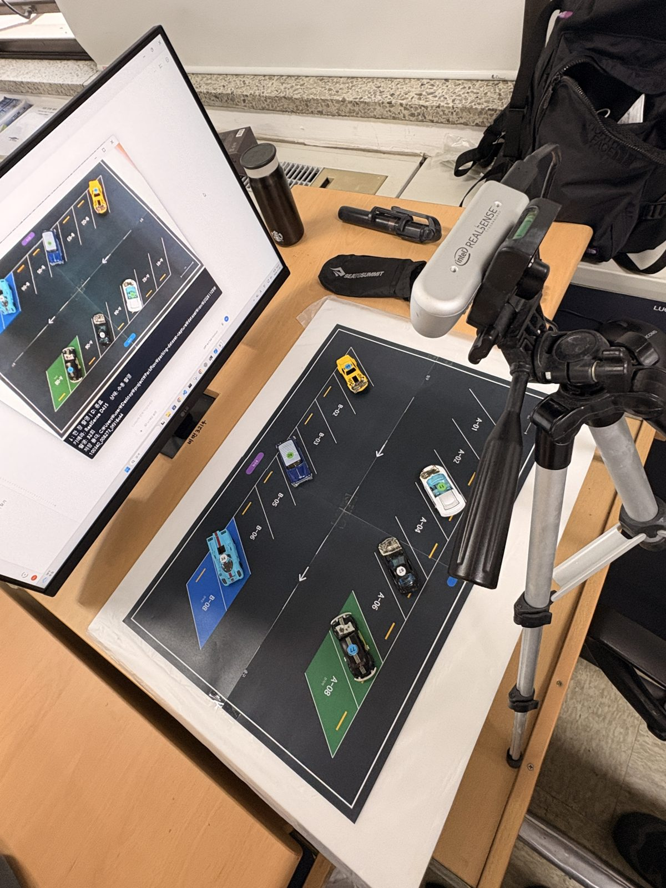
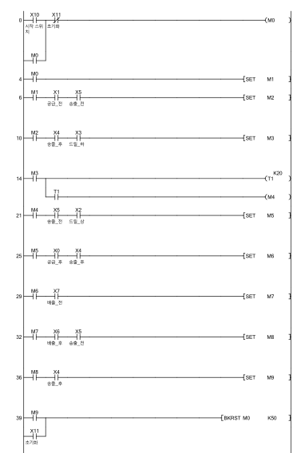
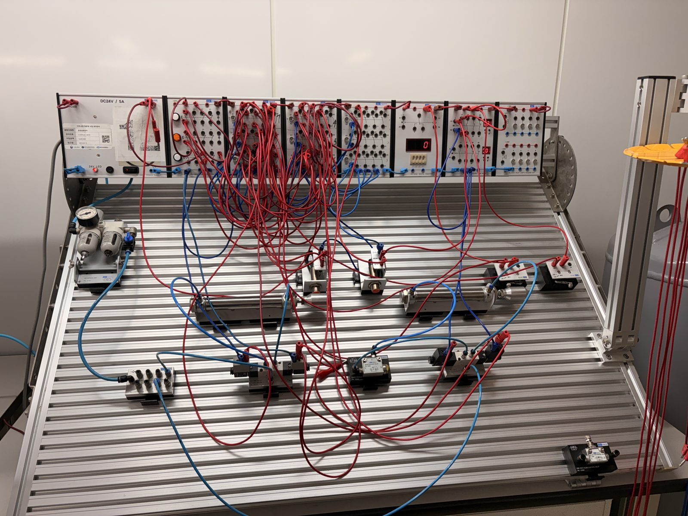
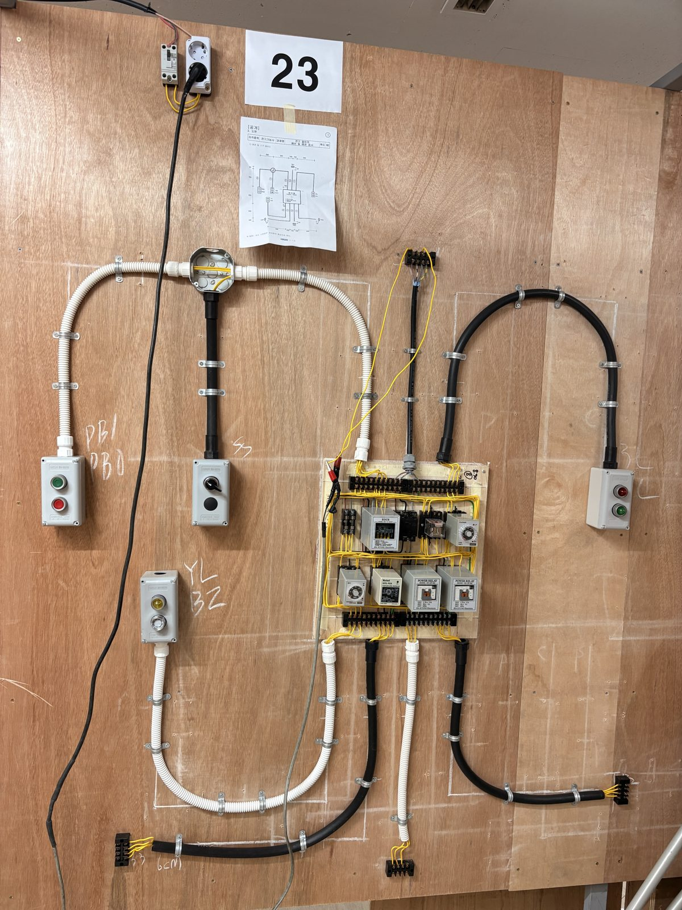

박해준
자동화 분야 신입 지원
교육 과정에서 직접 해 본 실습과 프로젝트를 모았습니다.
huks1357@gmail.com01프로젝트
AI 스마트 주차장 통합관제 (PARK:ON)
- 인원
- 6명
- 담당
- 백엔드 서버(FastAPI·SQLite), 주차 상태·입출차 세션 관리, 학습용 차량 이미지 촬영
- 방식
- AI 코딩 도구로 코드를 작성하고, 동작 조건 정리·테스트·결과 확인을 맡음
카메라로 미니어처 주차장을 인식해 빈자리, 차량 위치, 요금을 보여 주는 관제 시스템입니다. 실물 주차장 2곳(28칸)과 가상 주차장 2곳(128칸)을 서버 하나로 관리했습니다. 카메라 AI가 보낸 인식 결과를 받아 주차 상태와 입출차 기록을 확정하는 서버를 맡았습니다.

맡아서 고친 부분
- 실물 카메라를 연결한 뒤, 차를 옆 칸으로 옮기거나 두 차의 자리를 바꾸면 서버 기록과 카메라 번호가 맞지 않았습니다. 도착 칸에서 같은 번호가 이어서 보이고 원래 칸이 비면 이동으로 처리해, 입차 시각과 요금 기록이 이어지도록 팀원과 함께 정하고 반영했습니다.
- 번호판을 늦게 읽은 차는 같은 번호가 짧은 시간 안에 여러 번 확인될 때만 기록에 연결하도록 조건을 정리했고, 팀장 승인 후 반영했습니다.
- 오류 하나에 데이터 수신 전체가 멈추던 부분을, 문제 있는 데이터만 따로 빼고 나머지는 계속 받도록 고쳤습니다.
팀 통합 시험에서 30분 동안 들어온 관측 82,849건을 모두 받았고, 실물 주차장에서 차량 8대·11대를 옮기는 시험에서도 기록이 끊기지 않는 것을 확인했습니다.

디지털 트윈 배터리팩 조립·검사 공정 (가칭)
18650 배터리 4셀을 조립하고 전압을 검사하는 공정을 구상하고 있습니다. PLC와 Indy7 협동로봇을 연동하는 방향으로 검토 중이며, 결과는 프로젝트가 끝난 뒤 이곳에 정리할 예정입니다.
02교육 실습
대한상공회의소 부산인력개발원 · 인텔 AI융합 DX마스터클래스 (2026.06 ~ 2026.12)
서보모터 위치결정 제어
위치결정 모듈과 서보앰프(MR-J4)를 사용했습니다. 버튼 입력에 따라 원점 복귀를 하고, 두 목표 위치로 이동하도록 위치 데이터를 모듈에 쓰고 기동 신호를 주는 래더를 작성했습니다.

PLC 공정 순서 제어
공급, 드릴 가공, 송출, 배출 순서로 움직이는 실습 장비의 래더를 작성했습니다. 센서가 확인되어야 다음 단계로 넘어가게 했고, 초기화 버튼으로 실린더를 원위치시키도록 했습니다.

Indy7 협동로봇 픽앤플레이스
Indy7로 부품을 집어 지정 위치에 놓는 픽앤플레이스를 실습했습니다. 작업판 칸 번호를 좌표로 바꾸고, 충돌을 피하려고 작업 위치 위의 안전 위치를 거쳐 들어가고 나오도록 했습니다. PLC 버튼 신호를 Python이 읽어 로봇 작업을 시작하는 통합 제어도 실습했습니다.
Factory I/O 비전 분류
Factory I/O 가상 공정에서 컨베이어 위 물체를 비전 센서로 판별(초록·파랑·금속)해 푸셔 2개로 분류했습니다. PLC와 Factory I/O는 OPC로 연결했습니다.
전기공압 · 전기유압 회로
솔레노이드 밸브, 실린더, 릴레이 모듈을 직접 배선·배관해 회로를 구성하고 동작을 확인했습니다.

03자격 준비: 전기기능사
실기 대비로 시퀀스 회로도를 보고 제어함과 배관·배선 작업을 반복 연습했습니다.


04다뤄 본 도구
| 분야 | 내용 |
|---|---|
| PLC | Mitsubishi GX Works2 (래더, 서보 위치결정) |
| HMI | Pro-face GP-Pro EX (기초) |
| 시뮬레이션 | Factory I/O |
| 로봇 | 뉴로메카 Indy7 |
| 공유압 | 전기공압·전기유압 회로 구성 |
| 전기 | 시퀀스 회로 제어함 배선 (전기기능사 실기 준비) |
| 프로그래밍 | Python (AI 코딩 도구 활용) |
모두 교육 과정에서 익힌 기초 수준입니다.